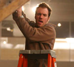
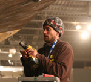
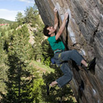
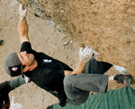
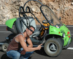

|
e-Grips has long been at the cutting edge of climbing competitions, sponsoring the biggest, highest profile events, and supporting local comps around the country since our inception. In that vein, we’ve also always supported the community of people who make these events happen and grow our sport. The eG Competition Routesetting Team is part of our effort to promote the best competition routesetters in the country, who are leading the charge to develop professional competition routesetting in the US. These guys are often a part of the behind the scenes magic that make climbers perform at their best, on amazingly creative terrain, and get the crowds screaming. Check out their Bios and e-Grips exclusive interviews… |
|
Chris Danielson - Route Setting Bio
(interview)
With over 12 years experience as a routesetter, Chris has worked commercially in numerous climbing gyms in the country, including the Boulder Rock Club, Metrorock, and Sportrock, and dozens of other gyms as a competition routesetter.Beginning with ASCF Regional Difficulty competitions in 1995, Chris developed his setting skills through years of practice assisting at high level competitions like the Teva Games, ABS Regionals and Nationals, and PCA’s. Specializing in bouldering, Chris now sets across the country at the professional level, most recently as Head Setter for the 2006 SLC Sendfest and 2007 ABS Nationals. For the past two years, he has been working as an independent contractor and consultant in the climbing industry, providing start-up and operations consulting to all types of climbing facilities. He has also been involved in the design and installation of climbing walls as a construction supervisor for Eldorado Wall Company, and is the former Operations Director for USA Climbing. Chris is the National Climbing Gym Rep for GTHI, representing e-Grips, Flashed, PMI, and Trango, and can be reached at cdanielson@gthi.com. - A recent interview with Chris can be found here (interview). |
|
Jamie Emerson - Route Setting Bio
(interview)

Jamie is newer to climbing than all the other members of the e-Grips team, but don’t let that fool you… he is one of the most accomplished boulderers in the country, having developed numerous hard climbs around the Front Range of Colorado, from RMNP to Mt. Evans. In the past year he has sent multiple V13s, including Freaks of the Industry and Crown of Aragorn. Jamie began climbing and routesetting in his home state of Michigan in 2001, and soon after moved to Boulder, Colorado. As Head Routesetter at The Spot Bouldering Gym from 2003 – 2005, he gained experience setting for high level PCA and ABS bouldering competitions. Jamie has since gone on to set for numerous Teva Games, and ABS Regionals and Nationals from California to Maryland, including the Head Setter position for ABS Nationals in 2006. Jamie is notorious for obsessing about climbing, constantly trying to improve his own ability and perfect the exact movement of the hardest competition problems in the country, always with e-Grips holds. Track the progress of Jamie’s obsession and other climbing adventures at his blog www.b3bouldering.com.
- A recent interview with Jamie can be found here (interview). |
|
Mike Moelter - Route Setting Bio
(interview)

Mike gained his setting experience working at the esteemed Boulder Rock Club from 1997 until 2004, where he held the position of Operations Manager for five years. Mike was integral in the creation of the Boulder Climbing Series (BCS) which led to head route setting contract work for all nationally recognized climbing competitions in the United States: USA Climbing (USCA), the Professional Climbers’ Association (PCA), the American Bouldering Series (ABS), the Teva Mountain Games, Adventures NYC and the Petzl Rock Comps. He is among the most experienced routesetters in the US, and has worked as head setter for events with the cumulative cash purses totaling more than $200,000. Mike is a former co-owner of the American Bouldering Series, which was merged with USA Climbing, the national governing body for the United States, and he is currently the Operations Director of USA Climbing. Mike is also sponsored by Boulder, Colorado based Verve and La Sportiva.
- A recent interview with Mike can be found here (interview). |
|
Lance Hadfield - Route Setting Bio
(interview)

Lance began setting in the late 1980s, when the first climbing gyms began popping up in the country. He has worked at Stone Age Climbing Gym in Albuquerque, New Mexico for ten years. In the past year Lance has set for the 2007 SCS Youth Nationals, Divisionals, and the 2006 Continental Championships. In 2006, he also was Head Setter for the USAC Adult Nationals. Lance spends a good portion of his time from fall to spring routesetting for various bouldering and roped competitions in the Southwest, and has also specialized in routesetting clinics throughout that region for many years. He also keeps busy facilitating “Peak Performance” clinics which focus on fitness for climbing and technique development, as well as consulting on climbing wall design and retail operations. When he gets outside, Lance loves climbing at new areas and enjoys all types of climbing styles and crags, including favorites like Maple Canyon, Rifle, Alamogordo, Hueco Tanks, and Sheffield, England.
- A recent interview with Lance can be found here (interview). |
|
Kynan Waggoner - Route Setting Bio
(interview)

Kynan might be from the flatlands, but he can turn a wrench with the best of them. As Manager and Head Routesetter at X-treme Rock Climbing in Miami, FL, he was responsible for a number of local and regional competitions all over the SE United States. Over the years, he has worked for a number of larger competitions as Chief Routesetter: SCS Youth National Championships and ABS Youth National Championships most notably.
Kynan recently went to Ecuador to set at the 2007 Youth World Championship and receive International Certification as a Routesetter. After moving to Colorado last year, he is trying to learn how to climb on rock that doesn’t have large pieces of colored tape telling him where to place his hands and feet. The mere mention of European limestone sport climbing makes his palms sweat and his heart race. - A recent interview with Kynan can be found here (interview). |